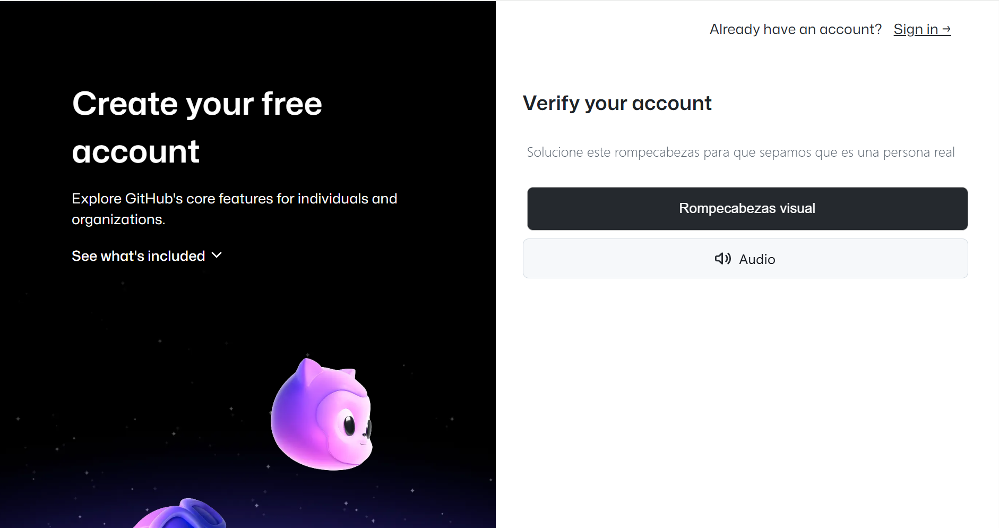
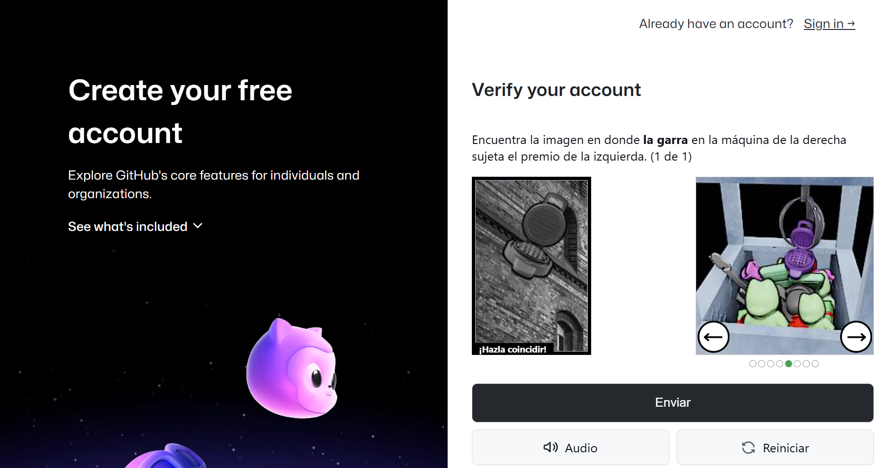
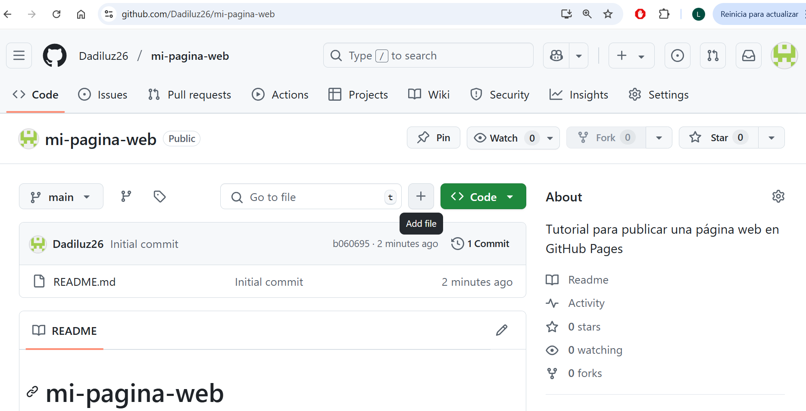
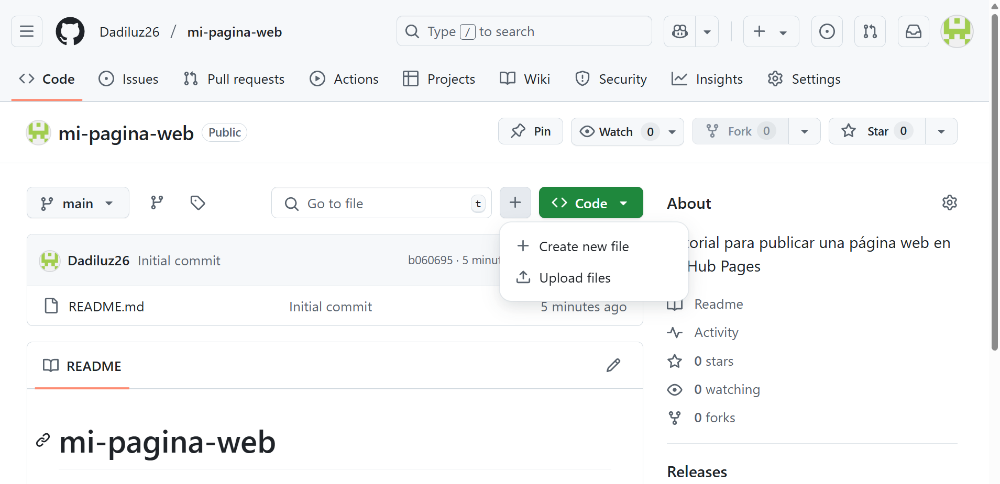
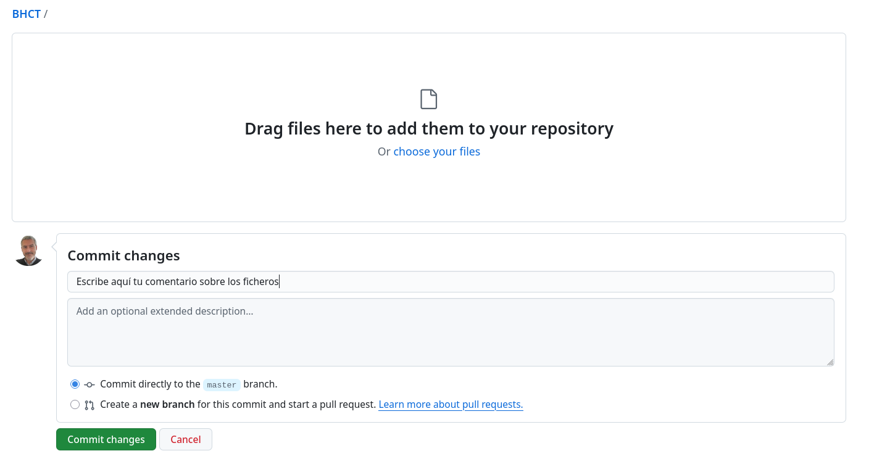
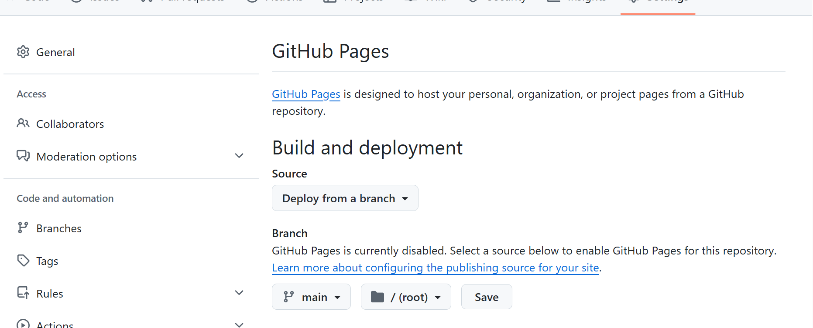
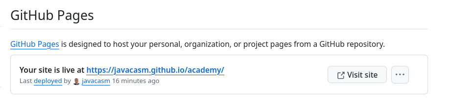

Introducción
Hoy en día, la mayoría de las publicaciones se hacen en las redes sociales. Cada vez se usan menos los blogs, y las páginas web propias en general.
Pero desde El Cacharreo queremos reivindicar la publicación de contenidos por nosotros mismos, controlando todo el proceso.
Las redes sociales son un buen escaparate, pero hay demasiadas cosas que no controlamos:
- Un algoritmo desconocido decide quién te ve..
- El mismo algoritmo decide qué te interesa...
- También el orden, la frecuencia o la antigüedad de las publicaciones la decide ese algoritmo.
- Según tu perfil verás unas cosas u otras: ¿eres un señor? te enseñará deportes...
Por todo ello vamos a empezar una serie de tutoriales explicando cómo funciona la publicación web, cómo podemos crear y publicar nuestros propios contenidos.
Eso sí, luego recurriremos a las redes sociales para darle publicidad y moverlas un poquito…
Vamos a empezar con un tutorial muy detallado para publicar una página web en GitHub usando GitHub Pages. Al final, también verás otras alternativas gratuitas para alojar sitios no profesionales y como ejemplo de página web publicada usaremos este mismo tutorial.
Vamos a simplificar, usando sólo HTML, y algo de estilo (CSS) pero no interatividad (javascript) de momento.
Como hemos dicho usaremos para el alojamiento usaremos GitHub, que es un servicio de almacenamiento en la nube, pero especializado en temas de programación o de documentación. Yo lo uso para guardar la documentación de mis cursos
🧰 Requisitos previos
- Una computadora con navegador web (Chrome, Firefox, Edge, etc.)
- Conexión a internet
- Para esta primera versión, no vas a necesitar conocimientos en programación ni de uso avanzado de su sistema operativo
✅ PASO 1: Crear una cuenta en GitHub
Empezaremos creando nuestra en GitHub
- Ve a https://github.com
- Haz clic en el botón “Sign up” (Registrarse). Como verás la página está en inglés, hasta donde yo sé no se puede seleccionar otro idioma, mejor que te acostumbres a usar el inglés…
- Escribre:
- Nombre de usuario
- Un correo electrónico válido
- Contraseña segura
- Verifica tu cuenta mediante el CAPTCHA y después se te enviará una confirmación a tu email. 
Si usamos “Rompecabezas visual”

- Elige el plan gratuito (Free).
- Omite o responde las preguntas de configuración inicial.
Ahora ya tienes una cuenta de GitHub.
✅ PASO 2: Crear un nuevo repositorio
Ahora vamos a crear un “repositorio”, es un espacio dedicado a un proyecto, en él podremos crear todos los archivos que queramos y del tipo que deseemos.
En la página principal de GitHub, haz clic en el icono “+” (arriba a la derecha) y selecciona “New repository”.
Configura:
- Repository name: por ejemplo
mi-pagina-web - Description: “Tutorial para publicar una página web en GitHub Pages”
- Visibility: Selecciona Public porque queremos que cualquiera pueda ver nuestra página. También podría ser Private, pero sólo lo veríamos nosotros.
- Marca la opción “Add a README file”, es un fichero que explica el contenido del repositorio.
- Repository name: por ejemplo
Haz clic en “Create repository”
✅ PASO 3: Instalación de las herramientas necesarias
Para crear y gestionar tu página web, necesitarás un editor de texto, preferiblemente orientado a programación:
- Editor de Código:
- Descarga el editor Visual Studio Code (gratuito y muy usado) o su versión 100% Open Source VSCodium. Diferencia entre VSCode y VSCodium
- Alternativas: Sublime Text, Atom o Notepad++.
✅ PASO 4: Crear la página web (HTML básico)
Crearemos una página web simple que contenga una versión reducida de este tutorial. Usaremos HTML (texto y estructura) y CSS (formato y aspecto) básicos.
Crea una carpeta para tu proyecto:
- En tu PC, crea una carpeta llamada
mi-pagina-web. - Abre Visual Studio y haz que apunte a la carpeta de tu web. Usa la opción “Archivo -> Abrir Carpeta”
- En tu PC, crea una carpeta llamada
Escribe el código HTML:
Crea un fichero de texto “Archivos -> Nuevo Archivo de texto”
Agrega el siguiente contenido:
<!DOCTYPE html> <html lang="es"> <head> <meta charset="UTF-8"> <meta name="viewport" content="width=device-width, initial-scale=1.0"> <title>Tutorial: Publicar Página Web en GitHub Pages</title> <link rel="stylesheet" href="styles.css"> </head> <body> <header> <h1>Tutorial: Cómo Publicar una Página Web en GitHub Pages</h1> </header> <main> <section> <h2>Paso 1: Crear una Cuenta en GitHub</h2> <p>Visita <a href="https://github.com">github.com</a> y regístrate con un correo, usuario y contraseña.</p> </section> <section> <h2>Paso 2: Instalar Herramientas</h2> <p>Descarga <a href="https://code.visualstudio.com/">Visual Studio Code</a> y <a href="https://git-scm.com/">Git</a>.</p> </section> <!-- Añade más secciones según el tutorial --> </main> </body> </html>- Guarda el fichero con el nombre “index.html”
Añade el fichero de estilos CSS:
Crea un nuevo fichero de texto
Agrega el siguiente contenido:
body { font-family: Arial, sans-serif; margin: 0; padding: 20px; background-color: #f4f4f4; } header { text-align: center; background-color: #333; color: white; padding: 10px; } main { max-width: 800px; margin: 0 auto; background-color: white; padding: 20px; border-radius: 5px; } h1, h2 { color: #333; } a { color: #0066cc; text-decoration: none; } a:hover { text-decoration: underline; }- Guárdalo como
styles.cssen la misma carpeta.
- Guárdalo como
Prueba localmente:
- Abre
index.htmlen tu navegador para verificar que la página se vea correctamente (haz dobleclic enindex.html) - Si quieres prueba a modificar los ficheros, cambiando el texto, tamaño o los colores en el CSS. Recarga el página en el navegar para ver los cambios.
- Abre
✅ PASO 5: Subir el Código al Repositorio
Ahora abre tu repositorio github en un navegador. Pulsa el botón “+” (“Add”)

Podríamos crear un fichero con “Create new file” y añadir el contenido, pero si ya los tenemos creados es más rápido usar “Upload files” 
Arrastra los 2 ficheros que has creado a la ventana que aparece:

- Escribe un comentario sobre los cambios y pulsa “Commit changes”. Github está pensado para compartir contenido, de ahí la insistencia en que se comenten los cambios.
✅ PASO 6: Activar GitHub Pages
Ahora vamos a hacer que Github entienda que tu repositorio es una página web
- Haz clic en la pestaña “Settings” (Configuración) de tu repositorio.
- En el menú lateral izquierdo, baja y haz clic en “Pages”
- En la sección “Source”, selecciona:
- Branch:
main - Folder:
/ (root)
- Branch:
- Haz clic en “Save”

✅ PASO 7: Ver tu página web publicada
Abre en el navegador el enlace proporcionado por GitHub. Por ejemplo:
https://tuusuario.github.io/mi-pagina-web/¡Listo! Tu sitio web está en línea y accesible para cualquiera.

💡 Otras alternativas gratuitas a GitHub Pages
Si no quieres usar GitHub o buscas más opciones, aquí tienes algunas:
🔹 Netlify (https://netlify.com)
- Ideal para sitios estáticos.
- Puedes conectar directamente con GitHub.
- Funciona con drag & drop de archivos también.
- HTTPS y dominio gratuito incluido (
.netlify.app)
🔹 Vercel (https://vercel.com)
- Rápido despliegue de proyectos web.
- Integración con GitHub y frameworks modernos como Next.js.
- URL gratuita (
.vercel.app)
🔹 Neocities (https://neocities.org)
- Estilo “old-school”, perfecto para sitios personales o blogs.
- Interfaz sencilla.
- 1 sitio gratis con 1 GB de espacio.
🔹 Render (https://render.com)
- Similar a Vercel/Netlify, más orientado a apps y APIs, pero sirve para sitios estáticos.
¿Conoces alguna página gratuita más? No dejes de comentarlo
🧼 Consejos finales
- Usa nombres de archivo simples (
index.htmles la página de inicio por defecto). - Evita espacios o caracteres especiales en nombres de archivos o carpetas.
- Puedes agregar CSS o imágenes subiéndolos al mismo repositorio.
- Si haces cambios, recuerda commitear y luego GitHub actualiza la página automáticamente.
- A veces tarda unos segundos en aparecer la última versión...